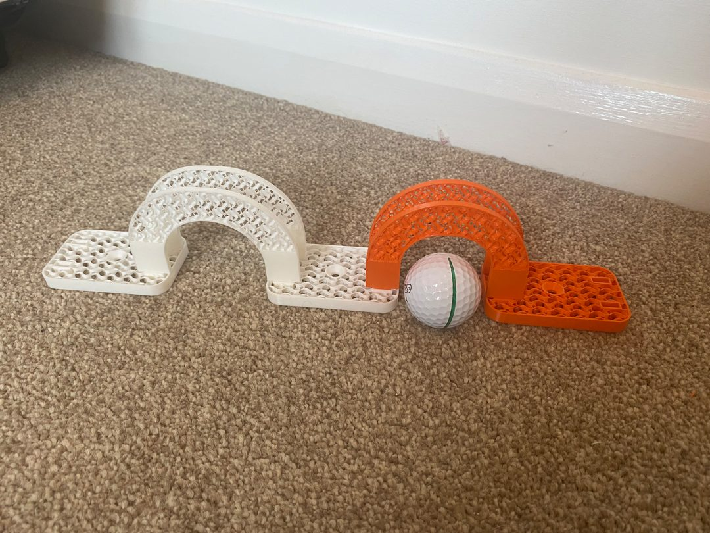
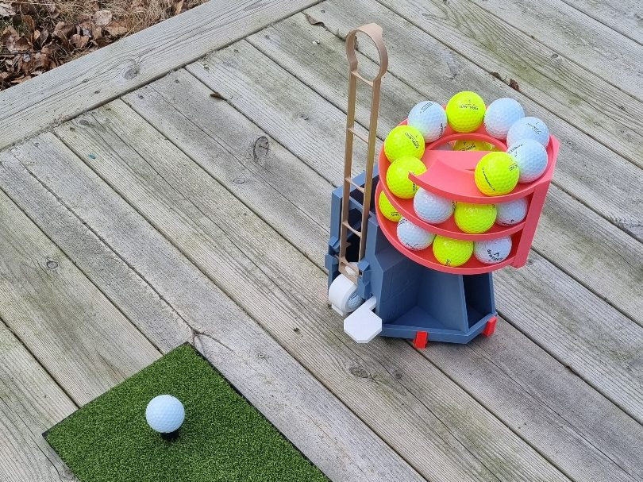
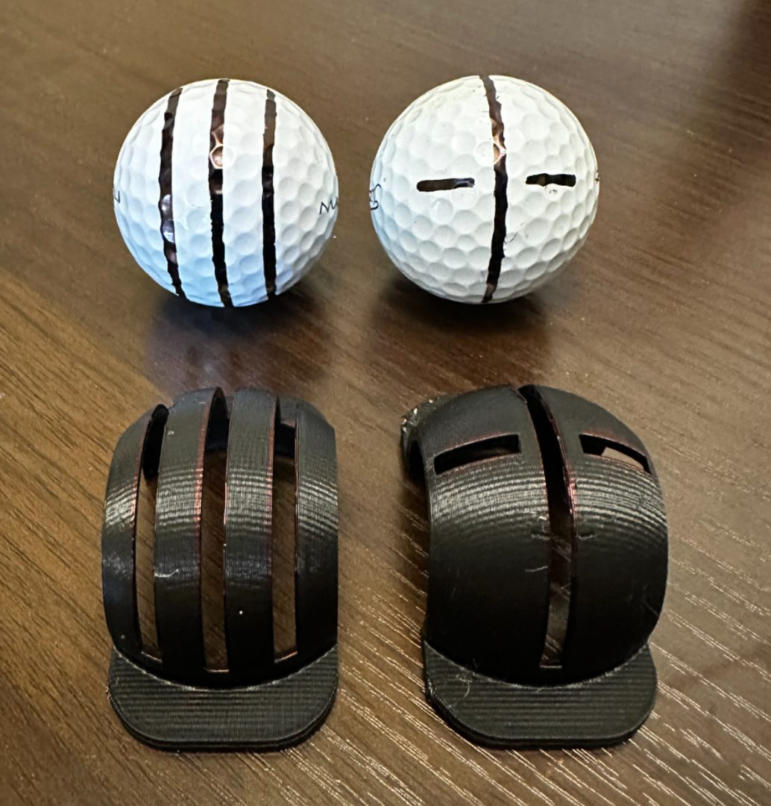
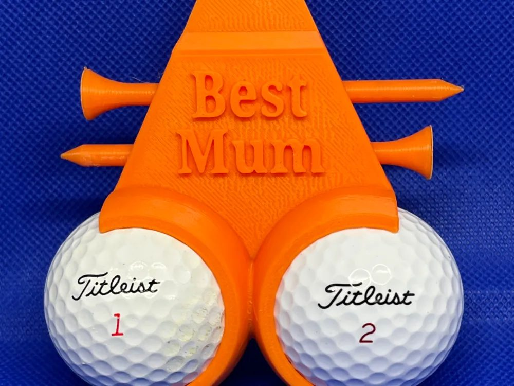
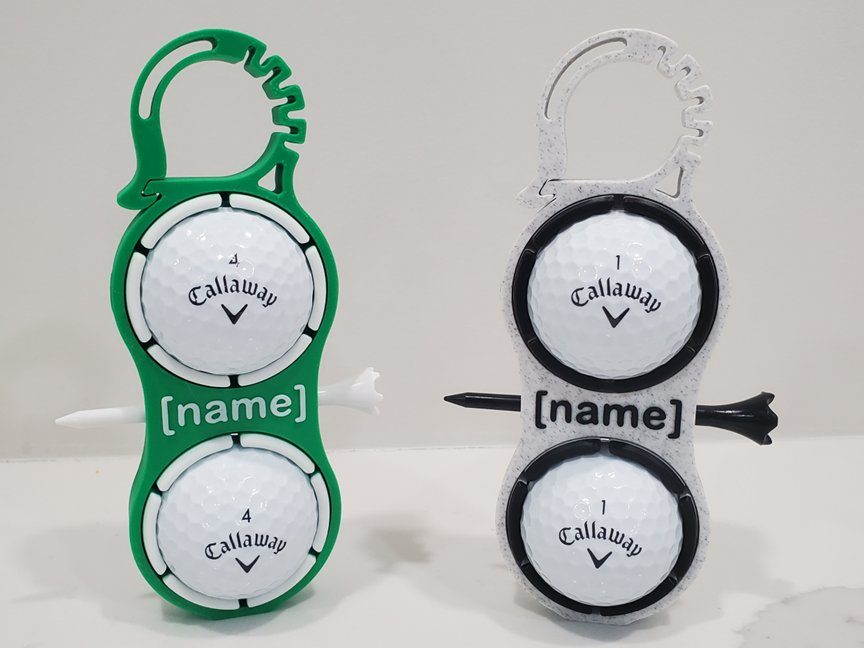
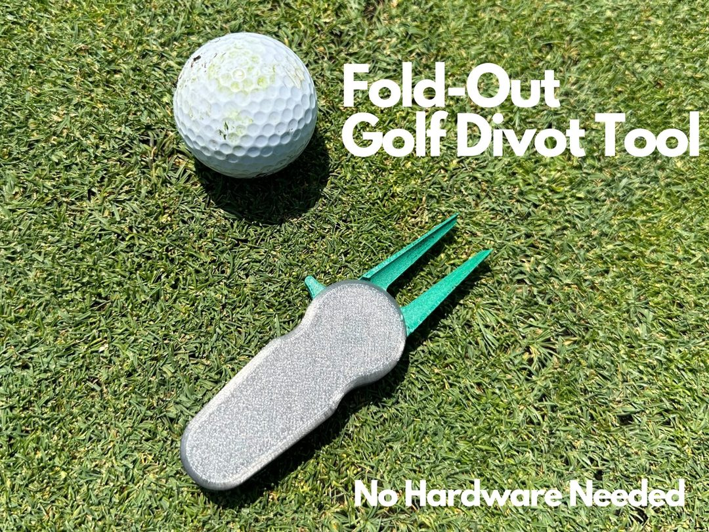
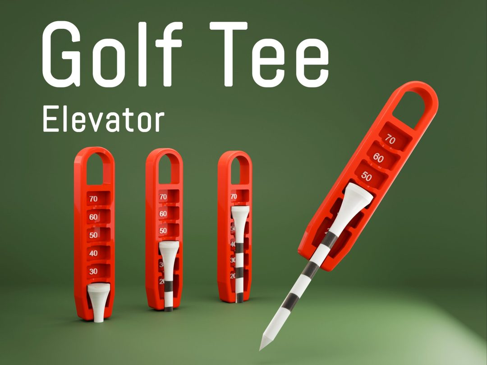
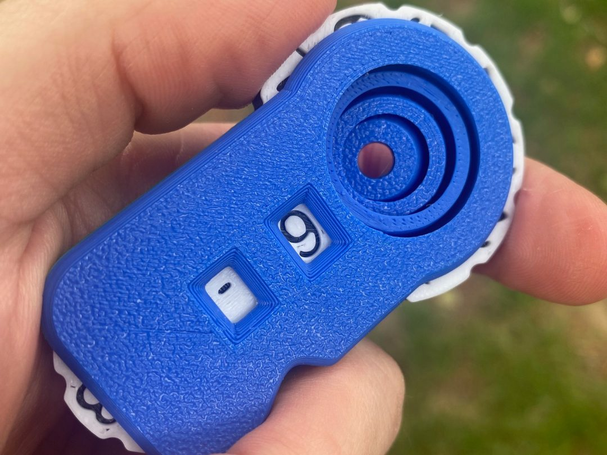
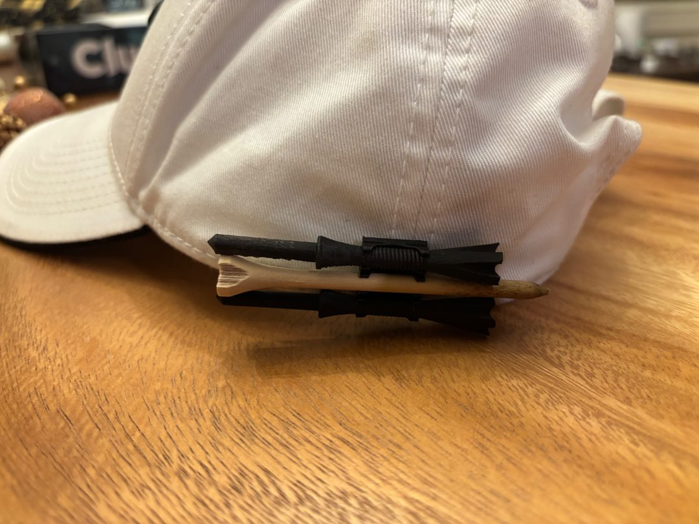
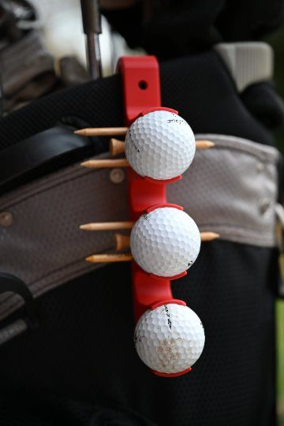

Allenamento
Cancelletti per il putt
Coppia di cancelletti per allenare la precisione: la pallina deve passare nel varco senza toccarli.
€ 00,00
AcquistaAccessori pratici per il gioco e l'allenamento, oltre a qualche idea regalo. Acquisto sicuro con carta di credito: clicchi su “Acquista”, paghi sulla pagina protetta e pensiamo noi alla spedizione.
Pagamenti gestiti tramite circuito sicuro. Per spedizioni e resi, condizioni di vendita e privacy consulta le pagine dedicate.

Coppia di cancelletti per allenare la precisione: la pallina deve passare nel varco senza toccarli.

Tiene le palline in ordine e a portata di mano durante la pratica al campo o in giardino.

Stampo per disegnare linee dritte sulla pallina e allineare meglio putt e drive.

Supporto che tiene due palline e i tee, personalizzabile con una scritta: un pensiero per chi ama il golf.

Aggancia alla sacca due palline e un tee; si può personalizzare con il nome.

Forchetta tascabile per riparare i segni sul green; si apre e si richiude in un gesto.

Imposta sempre la stessa altezza del tee (da 30 a 70 mm) per drive più costanti.

Segnapunti meccanico per tenere il conto dei colpi buca dopo buca, da agganciare alla sacca.

Clip che fissa i tee alla visiera del cappello: sempre pronti e mai persi.

Supporto da agganciare alla sacca che tiene tre palline e alcuni tee a portata di mano.
Per pubblicare: carica le foto nella cartella img/ con i nomi esatti qui usati, poi metti il prezzo e il link di pagamento (Stripe/PayPal) di ogni prodotto al posto di € 00,00 e di href="#".